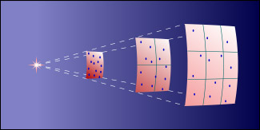
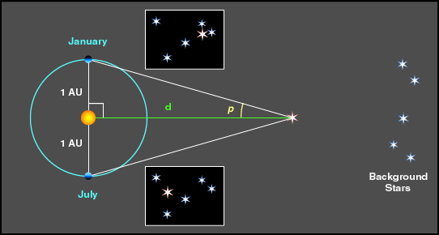
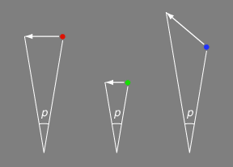
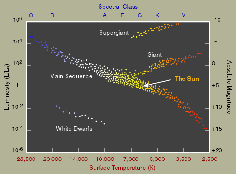

However, if a star is further away from us, it will appear to be dimmer. In fact, the intensity of the star light that reaches the observer is inversely proportional to the square of the distance between the star and the observer.

Thus, the apparent magnitude is not an intrinsic property of the star. For example, a star may appear to be dim simply because it is far away from us. To get a measure of how bright a star actually is, we define its absolute magnitude. This is the apparent magnitude of an object at some standard distance from us. This standard distance is chosen to be about 32 light years (10 parsecs, see below). For example, the apparent magnitude of our Sun is -26.8, but its absolute magnitude is just 4.8. The absolute magnitude describes the luminosity, that is the amount of energy radiates per second, of the star. We can also talk about the absolute magnitudes of objects like star clusters, galaxies, etc.
Meter is not a very useful unit in astronomy because heavenly bodies are very far apart. As we have mentioned in Chapter 6, the convenient length unit for measuring distances between planets is the astronomical unit (A.U.). (Recall that one astronomical unit is the average distance between the Sun and the Earth.) To talk about the distances between stars, we could use light year, which is the distance traveled by light in one year. Note that light year is a distance scale, not a time scale. Do you know how many meters is a light year?
Parsec is another very common distance unit in astronomy. Since the Earth keeps on orbiting around the Sun, a not-very-distant star will seem to move with respect to the very far away background stars. This phenomenon is called parallax. We can see the effect in maximum by comparing two photos taken by six months apart. From the two photos, we can measure the angle p in the following figure. Since we also know the value of 1 A.U., by simple trigonometry, we can calculate the distance d. If the angle p is one arc second, then we define the distance d to be one parsec. One parsec is about 3.26 light years. This is a simple method to measure the distances between us and nearby stars. The spacecraft Gaia could measure about one billion stars (about 1 per cent of stellar population in our Galaxy). For larger distances, we have to use other methods of measurement.

Parallax is only the apparent motion of the stars. The real motion of a star will induce what we call proper motion of a star. The unit of proper motion is angle per year and the magnitude of the proper motion of a star depends on three factors: 1) the speed of the real motion of the star; 2) the distance between the star and the observer; and 3) the angle between the direction of the real motion and the line of sight. Therefore, a fast moving but far away star could have the same proper motion as a slow moving but nearby star.

Stars are classified by their spectral lines well before we know that those lines are also related to the temperature. The classes of spectral lines are called the spectral types, from O to M. Hottest stars are spectral type O, and coolest stars are type M. The standard mnemonic to remember the sequence of spectral types is "Oh, Be A Fine Girl, Kiss Me." According to the historical convention, the type O stars are plotted at the left end of the H-R diagram.

Most stars lie along the diagonal from the upper left to the lower right. This is called the main sequence, and stars in this region are called main sequence stars. Stars at the upper right corner have low surface temperature, hence low energy output per area, but still high luminosity. So, stars in this region are physically very large. We call them giants. On the other hand, stars at the lower left are physically very small, we call them dwarfs.